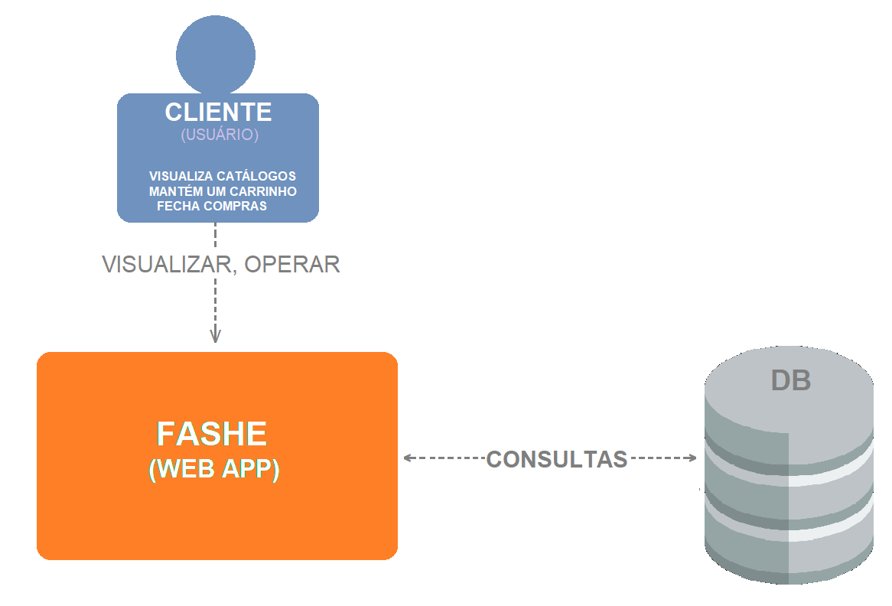
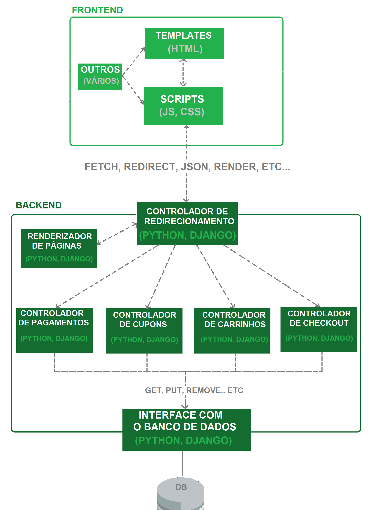

Website de e-commerce com Django
Esta é uma documentação arquitetural de um site de e-commerce chamado Fashe desenvolvido com o framework web Django. Django foi desenvolvido para permitir a construção de aplicativos web rapidamente e de maneira muito fácil, com foco no backend. Este é um site de demonstração, não um site real. O objetivo do projeto é mostrar o que se é possível fazer usando um framework tão simples e eficiente como Django. O site tem todas as funcionalidades esperadas de um e-commerce moderno, como contas de usuários que mantém carrinhos e fecham compras, por exemplo. Link para o site: https://colorlib.com/etc/fashe/index.html
Autores
Este documento foi produzido por Vinícius Abner Pereira de Souza.
- Matrícula: 118110384
- Contato: vinicius.souza@ccc.ufcg.edu.br
- Projeto documentado: https://github.com/zinmyoswe/Django-Ecommerce
Descrição Arquitetural - Site Fashe feito com framework Django
Objetivo Geral
Implementar um website demonstrativo que usa o framework web Django.
Objetivos Específicos
Apresentar um website de e-commerce que contém todas as funcionalidades esperadas num e-commerce moderno, como carrinho de compras, operação de pagamentos online, um blog, etc. Por se tratar de uma demonstração, obviamente algumas funcionalidades não estão completamente implementadas, como o fechamento real de compras, por exemplo. Este documento objetiva mostrar como um website construído com Django é relativamente arquiteturalmente simples.
Contexto
O sistema do Fashe é bem simples até contextualmente. Basicamente, só há três entidades envolvidas: os usuários (sejam eles clientes com conta ou não), o próprio sistema e o banco de dados. Os usuários visualizam os produtos nas páginas, adicionam ou removem produtos do carrinho, fecham compras, realizam pagamentos, e pedem reembolso. O sistema Fashe faz o serviço esperado de e-commerce. E o banco de dados é o banco de dados.

Containers
Como toda aplicação web, o Fashe pode ser dividido em dois containers: de frontend e backend, respectivamente. O frontend do Fashe apresenta as páginas com os produtos organizados em categorias, e também oferece uma interface para as operações do usuário (atualizar carrinho e fechar compra, por exemplo) por meio de formulários Django. Já o backend é responsável por realizar as operações que o usuário fez nas páginas, que envolvem (quase) sempre modificações ou consultas ao banco de dados. Também controla a renderização de páginas e roteamento.

Componentes
O frontend pode ser subdivido em duas partes principais: as páginas HTML (o container TEMPLATES) e os scripts CSS e JavaScript (o container SCRIPTS). Há outros componentes adicionais e acessórios, como arquivos de imagens, fontes, etc… que, pela simplicidade, foram contidos num container chamados OUTROS.
Já o backend é mais complexo. Há um componente de roteamento, que neste documento foi chamado de Controlador de Redirecionamento que serve como ponte entre o frontend e o backend. Esse componente mapeia urls em views, que por sua vez, realizam alguma operação requisitada pelo usuário e/ou requisita um redirecionamento ao componente de redirecionamento. Há também um componente para lidar com as operações pertinentes ao carrinho (controlador de carrinho), um para lidar com renderização de páginas (Renderizador de páginas), um para a realização de pagamentos (controlador de pagamentos), aplicação de cupons (controlador de cupons), e fechamento de compras (controlador de checkout). Por fim, há um componente que serve como interface para que os controladores possam acessar e/ou modificar dados do banco.

Código
O código do frontend pode ser resumido a páginas HTML e scripts JavaScript e CSS. Também há outros códigos que são dos componentes acessórios descritos na seção anterior.

Em projetos Django, o controlador de roteamento fica todo num arquivo chamado urls.py. Dá pra se notar que em todos os componentes além do controlador de roteamento aparece o mesmo arquivo views.py. Isso se dá porque é bastante comum num projeto Django todas as views estarem no mesmo arquivo. Daria para organizador o código dos controladores em arquivos específicos, sim, mas a decisão do arquiteto desse projeto foi manter a tradição. O arquivo forms.py é onde estão reunidos todos os formulários que o usuário utiliza no frontend. Em Django, os formulários podem ser definidos em python para facilitar a manipulação dos dados deles no backend. A interface com o banco de dados é feita no arquivo models.py. O framework Django permite definir tabelas do banco como classes, de maneira a ser possível os controladores acessarem dados da tabela como se acessaria um objeto qualquer num program OO. Mais uma vez, é muito comum todas as tabelas (ou modelos) serem definidas num só arquivo, como foi feito aqui.

Arquivos adicionais para o funcionamento do Django foram contidos no container ARQUIVOS DJANGO.